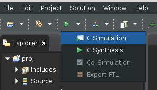
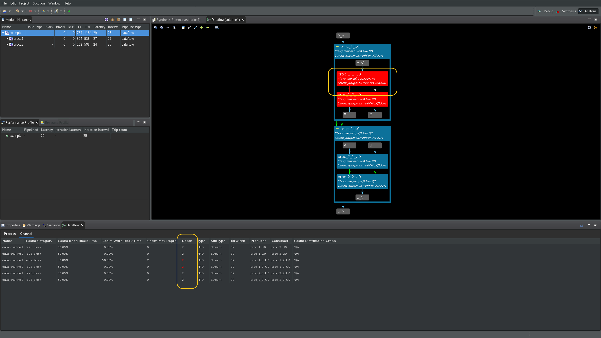
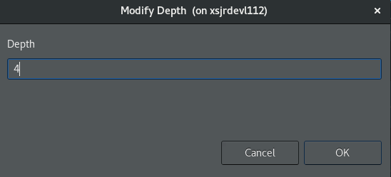

2021.1 Vitis™ アプリケーション アクセラレーション チュートリアル2021.1 Vitis アプリケーション アクセラレーション開発フロー チュートリアル |
Vitis HLS の解析および最適化 |
FIFO のサイズ変更によるパフォーマンスの向上とデッドロックの回避¶
データフロー最適化のダイナミックな性質と、異なるレートで実行されるさまざまな並列タスクの傾向により、データフロー チャネルのサイズが適切でないと、パフォーマンスが落ちたり、デッドロックが発生する可能性があります。データフロー チャネルには、ユーザーによって作成されるタイプやツールで作成されるタイプなど、さまざまなタイプがあります。
チャネルのタイプ¶
| チャネル タイプ | 例 | 作成 |
|---|---|---|
| FIFO | ストリーム (hls::streams およびストリーム配列を含む) | ユーザー |
| スカラー伝搬 FIFO | ツール | |
| ブロックのストリーム | ユーザー |
次の理由から、これらの FIFO チャネルは「独自のハンドシェイクを持つチャネル」と考える必要があります。
読み出しと書き込みがスケジュールされます。
読み出し/書き込み信号は、パイプライン制御または FSM によって個別に駆動されます。
full_n/empty_n 信号が、パイプラインまたは FSM のステートの個々の反復を直接停止します。
| チャネル タイプ | 例 | 作成 |
|---|---|---|
| PIPO | PIPO | ユーザー |
| タスク レベル FIFO (TLF) | ツール | |
| 入力ポートと出力ポートを上位レベルに設定します。 | ユーザー |
タスク レベル FIFO (TLF) はスカラー FIFO で、書き込みのためにプロデューサーの done ハンドシェイクに、読み出しのためにコンシューマーの start ハンドシェイクに接続されます。これらのタイプの FIFO は、ツールによって自動的に推論されます。これらは、基盤となる同期メカニズムのため、PIPO のようなものとみなされます。
これらのチャネルは、次の理由から「ap_ctrl_chain ハンドシェイクを使用するチャネル」と考える必要があります。
書き込みおよび読み出しは、スケジュールされません。これらは、プロセスの done ハンドシェイクまたは start ハンドシェイクに暗示的に関連付けられます。
これらの書き込み信号と読み出し信号は、それぞれ ap_done および ap_ready に接続されます。
これらの full_n と empty_n は、それぞれ ap_continue と ap_start に接続されます。
深さ、パフォーマンス、デッドロックなどの解析に関して、実際に重要なことは次のとおりです。
チャネルに独自のハンドシェイク (FIFO) があります。そのため、アクセスはプロセスの実行中に分散されます。たとえば、FIFO はパイプラインの最初の II の外部にあっても、またはデータフロー ネットワークの最後のプロセスにある FIFO であっても読み出すことができます。
チャネルは ap_ctrl_chain (PIPO) を介してハンドシェイクされます。このため、これらの読み出しは、パイプラインの最初の開始間隔 (II) にあるか、データフロー ネットワークの最初の「レベル」にあるプロセスにある必要があり、同様に、書き込みは最後の II または最後の「レベル」にある必要があります。
もう 1 つの違いは、1 つの操作で転送されるデータの量がパフォーマンスよりも、PIPO の配列とブロックのストリーム、ストリームのスカラー、スカラー伝搬 FIFO、およびタスク レベル FIFO などのリソース解析に関連している点です。
デッドロックの検出と解析¶
データフロー内の十分なサイズの FIFO (および PIPO) がないと、デッドロックが発生する可能性があります。次の図を参照してください。
ケース 1:
プロデューサーは FIFO1、FIFO2、FIFO1、FIFO2 (続く) へ順に交互に書き込みをします。
コンシューマーは、FIFO1、FIFO2、FIFO1、FIFO2 (続く) から順に交互に読み出しをします。
両方の FIFO の深さはデッドロックを回避するのに十分です (デフォルトの深さ 2 はパフォーマンスを最適化します)。
ケース 2 (同じ構造):
プロデューサーは、FIFO1 に N 回書き込んでから、FIFO2 に N 回書き込みます。
コンシューマーは、FIFO1、FIFO2、FIFO1、FIFO2 (続く) から順に交互に読み出しをします。
FIFO1 には深さ N が必要です (また、FIFO2 にはデフォルトの深さ 2 が最適です)。
上記の 2 つの単純なケースからわかるように、コードの構造がまったく同じであれば、FIFO チャネルへのアクセス方法によって、FIFO の深さを異なる方法で設定する必要があります。FIFO の深さは、FIFO アクセスの「バースト動作」を償却して一致させるために使用されます。
コンパイラが作成した FIFO と PIPO (プロセス間のスカラーや配列から) がデッドロックを発生させることはありません。ただし、最適なパフォーマンスにするには、その深さが不十分な場合があります。ユーザーが作成した FIFO (プロセス間の hls::streams および hls::stream_of_blocks から) は、その深さによっては、デッドロックまたは低パフォーマンスの両方の原因となることがあります。
ヒント: FIFO の深さが不十分なためにデッドロックが発生した場合は、少なくとも 1 つのブロックされた書き込みが常に表示されます。されない場合は、デザインの問題である可能性が高くなります。通常は、ノンブロッキングの読み出しまたは書き込み、または empty() と full() で処理された読み出しと書き込みが原因です。
このチュートリアルの目的は、データフロー デザインを解析し、そのボトルネックを特定することです。これには次のようなものがあります。
残りよりも大きい II を持つプロセスまたは領域。全体的なスループットが制約されることがあります。この問題は、次の方法で解決できます。
このようなプロセスの II を減らします。
データフロー領域を調べて、その理由 (次の 3 つのうちのいずれか) を見つけます。
FIFO (ストリーム、ストリームのブロック、ストリーム配列などの独自のハンドシェイクを持つチャネル) または PIPO (PIPO および TLF などの独自のハンドシェイクを持たないチャネル) の深さが小さすぎて、いっぱいになってしまう可能性があります。この問題は、チャネルの深さを増加すると解決できます。この方法については、次のセクションで説明します。
最上位の同期 (上位からのスカラーまたは外部メモリ入力、または領域内の ap_ctrl_chain または ap_ctrl_hs を介して同期した呼び出しコンテキストへの出力)。この場合、これらの変数を手動でコピーし、プロセスのネットワークを介すことで、パフォーマンスの低下を回避できます。
複雑なデザインでは、データ依存の同期 (たとえば、プロセスが 1 回の実行で FIFO から 128 回読み出し、別の実行で 32 回読み出す) により、プロセスがさまざまな理由でブロックされることがあります。このような状況は時間の経過と共に変化します。この場合、前の演習で説明したように、データフローの協調シミュレーション波形がデバッグの唯一の実行可能なアプローチである可能性があります。
このチュートリアルの 2 つ目の演習では、サンプル デザインをまず合成し、データフロー ビューアーを起動して、デッドロックの調べ方と解決方法について説明します。この演習では、reference-files/deadlock フォルダーに含まれる単純なデータデッドロック例を見てみます。
この演習では、次を実行します。
データフロー ビューアーのさまざまな機能の使用方法を理解して、デッドロックを調べます。
FIFO のサイズ変更機能を使用して、デッドロックを解決し、パフォーマンスを向上させます。
演習 2¶
ディレクトリを
03-dataflow_debug_and_optimization/reference-files/deadlockディレクトリに変更し、次のコマンドで Vitis HLS ツールを起動します。
vitis_hls -p script.tcl Vitis HLS GUI が起動し、デザインの合成に必要なプロジェクトが作成されますが、GUI で script.tcl ファイルのコマンドの実行が突然停止します。
緑色の [Run] コマンド (
 ) の横にあるドロップダウン リストをクリックして、
) の横にあるドロップダウン リストをクリックして、C Simulation(次を参照) を選択し、C Simulation Dialogダイアログ ボックスでOKをクリックしてシミュレーションを実行します。

緑色の [Run] コマンド (
) をクリックして、デザインを合成します。緑色の [Run] コマンド (
) の横にあるドロップダウン リストをクリックし、Co-simulationリンクをクリックしてから、Channel (PIPO/FIFO) Profilingオプションを選択し、ポップアップ表示されたウィンドウでOKをクリックして C/RTL コシミュレーションを実行します。GUI は、このデザインでデッドロックが検出されると、自動的にデータフロー ビューアーを起動します (次の図を参照)。
[Dataflow Graph] ツールバー メニューの緑色の
+コマンドをクリックして、デザイン内のすべてのチャネルとサブプロセスを展開します。デッドロックになるプロセスは、グラフに赤で表示されます (次の図を参照)。グラフには、フルのチャネルは赤の矢印で表示され、空のチャネルは白の矢印で表示されます。[Channel] の表では、フルまたは空のチャネルの深さも赤でハイライトされます。Cosim Max Depth列とDepth列の両方を使用すると、サイズ変更が必要な最初のチャネルが、プロデューサー proc_1_1_U0 とコンシューマー proc_1_2_U0 プロセス間にある data_channel1 であることがわかります (ProducerおよびConsumerの列を参照)。

この FIFO のサイズ変更には 3 つの方法があり、この演習で順番にそれぞれの方法について説明します。
FIFO の手動のサイズ変更
FIFO のグローバルなサイズ変更
自動化された FIFO のサイズ変更
FIFO の手動のサイズ変更¶
FIFO または PIPO の深さが不十分なためにパフォーマンスが低下すると、少なくとも 1 つのプロセスがフルの FIFO でブロックされます。FIFO の深さの正しいサイズを決定することは、通常は解決不可能な問題です。幸いなことに、RTL 協調シミュレーションでは各チャネルで達成された最大の深さもレポートされるので、FIFO に大きな深さを適当に割り当てても、達成された最大の深さに常にサイズを変更できます。さらに、FIFO または PIPO の深さを増加してもパフォーマンスが低下することはなく、単に追加のリソースを消費するだけです。

前述のように、プロデューサー proc_1_1_U0 とコンシューマー proc_1_2_U0 プロセスの間にある data_channel1 のサイズを変更する必要があります。ブロックされた FIFO のサイズを変更するには、次の手順に従います。
上の図に示すように、ハイライトされた data_channel1 行を右クリックし、
Modify Depthオプションを選択します。これにより、[Modify Depth] ダイアログ ボックスが開きます。

新しい深さを 4 (2 の 2 倍) に設定し、
OKボタンをクリックします。協調シミュレーションを再実行するかどうかを確認するメッセージが表示されます。FIFO の深さの変更はされていないため、
Noボタンをクリックします。デッドロックの一部であった data_channel2 に対しても、この手順を繰り返します。
協調シミュレーションを再実行するかどうかを確認するメッセージが表示されます。
Yesボタンをクリックし、Channel (PIPO/FIFO) Profilingオプションを選択し、OKをクリックして協調シミュレーションを起動します。C/RTL 協調シミュレーションが再度実行され、デザインがまだデッドロック状態であることがレポートされます (次を参照)。

上記の手順を繰り返し、data_channel1 と data_channel2 の深さを 10 に増加します。C/RTL 協調シミュレーションを再実行し、これらのチャネルでデッドロックが解消され (現段階では緑色で強調表示ハイライト)、proc_1_U0 プロセスと proc_2_U0 プロセス間のチャネルに移動していることを確認します (次を参照)。
これらのチャネルで FIFO のサイズ変更手順を繰り返し、新しい深さを 10 に設定してから、C/RTL 協調シミュレーションを再実行します。デッドロックが proc_1_U0 プロセスと proc_2_U0 プロセス間のチャネルに移動します (次を参照)。

これらのチャネルで FIFO のサイズ変更手順を繰り返し、新しい深さを 10 に設定してから、C/RTL 協調シミュレーションを再実行します。これでデッドロックが解決されました (次の図を参照)。
ヒント: デッドロックの問題が解決されたため、データフロー グラフが自動的には表示されない可能性があります。この場合、[Dataflow Graph] ビューアーを手動で開く必要があります。

上の図からは、実際にはチャネルの中の 3 つだけに深さ 10 が必要であることがわかります。これは、Cosim Max Depth 列と Depth 列を比較するとわかります。ほかのチャネルはデフォルトの深さで問題なく、深さの値を増やす必要はありません。
重要: デッドロックは解決されましたが、問題の解決に役立つ新しい FIFO の深さはソース コードにバックアノテーションされていません。この時点で Vitis HLS GUI を終了すると、これらの深さの設定が失われます。これらの新しい深さをソース コードにバックアノテーションする場合は、後でチュートリアルの次の段階に進むときに戻しておく必要があります。
ソリューションをソース コードにバックアノテーションするには、新しいさ設定が必要なすべてのチャネルを選択し (Ctrl キーを押しながらマウスクリックでチャネルを選択)、次のように
Back Annotate the New Depth into the Designオプションを選択して、Nextをクリックします。

新しいウィンドウが表示され、デザインのソース コードに挿入されるプラグマの形式で変更が示されます。この新しいプラグマ設定には、このプラグマが Vitis HLS によって挿入されたことを示すコメントが含まれます (次を参照)。
このようなバックアノテーション ステップが実行されるたびに、新しいプラグマが追加されたので、デザインを再合成するかどうかを確認するメッセージが表示されます。Yes をクリックしてデザインを保存します。次に、緑色の [Run] コマンド ( ) の横にあるドロップダウン リストをクリックし、
) の横にあるドロップダウン リストをクリックし、Co-simulation リンクをクリックし、Channel (PIPO/FIFO) Profiling オプションを選択してから、ポップアップ表示されるウィンドウで OK をクリックして C/RTL 協調シミュレーションを実行します。新しいプラグマ設定でデッドロックが解決されたことを確認します。
重要: チュートリアルの次の手順に進む前に、上記のアノテーション ステップを実行した場合は元に戻しておいてください。Explorer タブの example.cpp をダブルクリックし (次の図を参照)、右端の Directives タブをクリックします。このタブには、最後の手順で追加した新しいプラグマが表示されます。各プラグマを右クリックし、Remove Directive を選択してソース ファイルから削除します。

FIFO のグローバルなサイズ変更¶
FIFO のグローバルなサイズ変更のフローを使用するには、最初から再起動する必要があります。Vitis HLS GUI を終了し、コマンド ラインで次のコマンドを実行して再起動します。
vitis_hls -p script.tcl 次は、次の手順を実行します。
緑色の [Run] アイコン
の横にあるドロップ ダウン矢印をクリックして、C Simulationを選択し、ポップアップ ウィンドウでOKをクリックします。csim が警告なしで正常に完了することを確認します。
C シミュレータによってコンソールに出力された hls::stream の最大の深さを確認します。
The maximum depth reached by any of the 26 hls::stream() instances in the design is 40 すべての FIFO の深さを、C シミュレーションでレポートされた最大値に指定します。これには、トップ メニューの
Solutionリンクをクリックして、Solution Settingsをクリックします (次の図を参照)。
Solution SettingsウィンドウのGeneralでスクロールして [Configuration Settings] でconfig_dataflowを見つけて、override_user_fifo_depth設定を選択し、値を 40 に設定します。OKをクリックして、この新しいコンフィギュレーションを設定します。緑色の [Run] コマンド (
) をクリックして、C 合成を再実行します。緑色の [Run] コマンド (
) の横にあるドロップダウン リストから Co-Simulationを選択して、C/RTL 協調シミュレーションを再実行します。表示されたウィンドウでOKをクリックします。今回はデッドロックは発生せず、C/RTL 協調シミュレーションはエラーなしで終了します。
Co-simulation Reportに移動し、データフロー アイコンの横にある最上位関数を右クリックし、Open Dataflow Viewerクリックして、データフロー ビューアーを再起動します。次に、データフロー ビューアーのチャネルの表から、
Cosim Max Depth列とDepth列の深さを比較します。正しい深さは、Cosim Max Depth列で確認できます。これが、このデザインのすべての FIFO に必要な深さです。
ソース コードのプラグマ設定に、
Cosim Max Depthを手動でバックアノテーションできるようになりました。
自動化された FIFO のサイズ変更¶
3 つのアプローチのうち、自動化された FIFO のサイズ変更が最も簡単ですが、次の点に注意してください。
協調シミュレーションの実行を繰り返す必要があるため、終了までに時間がかかる場合があります。
これはヒューリスティック アルゴリズムであり、場合によっては終わらないことがあります。
このアルゴリズムは、パフォーマンスが向上しなくなるまで、書き込みをブロックする FIFO の深さを自動的に増加します。FIFO の深さの中には妥当な範囲を超えて増加する場合があり、ユーザーが調べる必要があることもあります。
この自動化された FIFO のサイズ変更フローを使用するには、最初から再起動する必要があります。Vitis HLS GUI を終了し、コマンド ラインで次のコマンドを実行して再起動します。
vitis_hls -p script.tcl 次は、次の手順を実行します。
自動化された FIFO のサイズ変更の設定は、次の手順でオンにできます。
緑色の [Run] コマンド (
) をクリックして、C 合成を再実行します。緑色の [Run] コマンド (
) の横にあるドロップダウン リストから Co-Simulationをクリックして、C/RTL 協調シミュレーションを実行します。Co-simulation DialogでDynamic Deadlock Preventionオプションを選択します。OKをクリックして、C/RTL 協調シミュレーションを開始します。C/RTL 協調シミュレーションは、デッドロックの原因となるチャネルに適切な FIFO サイズを見つけるためにしばらく実行されます。しばらくすると、協調シミュレーションが問題なく完了した時点で停止します。
データフロー ビューアーを再起動すると、プロセスおよびチャネルの表の横に新しい
FIFO Sizing表が表示されます。この新しい表には、アルゴリズムによって決定された新しい FIFO サイズが表示されます。プラグマまたは指示子を使用して、ソース コード内のこれらの FIFO サイズを手動でバックアノテーションできます。

覚えておくべき点¶
要約すると、データフロー ビューアーでは、次のスループット解析タスクを実行できます。
グラフには、DATAFLOW 領域の全体的なトポロジが表示され、どのタイプのチャネル (FIFO/PIPO) が DATAFLOW 領域のタスク間通信のために推論されたかが示されます。各チャネルおよびプロセスを解析すると、デッドロックや FIFO のサイズが適切でないためにスループットが小さいなどの問題を解決するのに役立ちます。
協調シミュレーションのデータがあると、シミュレーション過程で FIFO の最大サイズを確認することにより、FIFO のサイズを決定する際の基準となるので、FIFO サイズの問題を解決できます。また、協調シミュレーションでは、自動デッドロック検出により、デッドロックに関係するプロセスおよびチャネルがハイライトされるので、問題をすばやく見つけて修正できます。
協調シミュレーション後にレポートされるデータには、FIFO のサイズだけでなく、プロセスおよびチャネルごとに、入力を待っていたり出力の書き込みがブロックされたりしているストールする時間も示されます。このグラフがあると、これらの問題を理解し、プロデューサーが高速でコンシューマーが高速 (またはその逆) の状況に対処するためチャネルのサイズをどのように管理すればよいかを判断するのに役立ちます。また、DATAFLOW 領域の真ん中で入力から読み出すことがパフォーマンスにどのように影響するかを理解するのにも有益です。これがパフォーマンスに影響する状況はよくあります。
Copyright© 2021 Xilinx